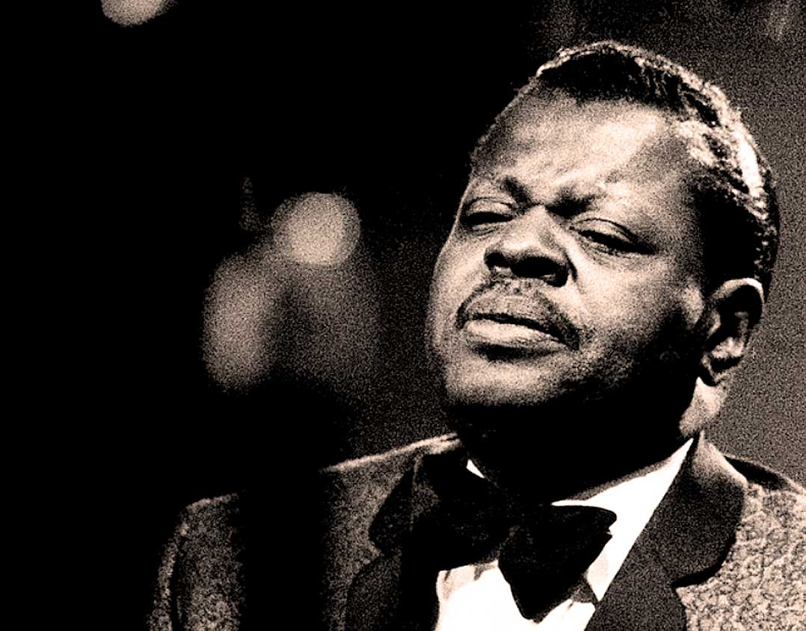

Oscar Emmanuel Peterson
The man who come close to total mastery of his instrument

Performed with Oscar Peterson Trio, Live In Munich, 1965.
Here's a time line of Oscar Peterson's life:
- 1925 - Born in Montreal, Quebec
- 1932 - Suffers tubercolosis, prevented him from playing trumpet and he switched to piano.
- 1940 - Won the national music competition organized by the Canadian Broadcasting Corporation. Dropped out of the High School of Montreal and became a professional pianist.
- 1950 - Worked in a duo with double bassist Ray Brown. Two years later they added guitarist Barney Kessel. Then Herb Ellis stepped in after Kessel grew weary of touring. The trio remained toegether until 1958, often touring with Jazz at the Philharmonic.
- 1958 - Recorded On The Town with the Oscar Peterson Trio.
- 1958 - Ellis departed, Peterson and Brown hired drummer Ed Thigpen. Worked on albums Night Train and Canadiana Suite.
- 1965 - Brown and Thigpen left, they were replaced by bassist Sam Jones and drummer Louis Hayes (and later, drummer Bobby Durham).
- 1970 - Jones and Durham left.
- 1970s - Formed a trio with guitarist Joe Pass and bassist Niels-Henning Ørsted Pedersen. Their album The Trio won the 1974 Grammy Award for Best Jazz Performance by a Group.
- 1974 - Added drummer Martin Drew to the trio. This quartet toured and recorded extensively worldwide.
- 1961 - The Peterson trio with Jackson recorded the album Very Tall.
- 1980s - Played in a duo with pianist Herbie Hancock.
- 1990s - Had a hip replacement surgery. His mobility was still inhibited.
- 1993 - A stroke weakened his left side and Peterson was removed from work for two years. After the stroke, he made performances and recordings with his protégé Benny Green.
- 1997 - Received the Grammy Lifetime Achievement Award and an International Jazz Hall of Fame Award.
- 2003 - Recorded the DVD A Night in Vienna for Verve with Niels-Henning Ørsted Pedersen, Ulf Wakenius, and Martin Drew.
- 2007 - Died at the age of 82.
"A one-handed Oscar was better than just about anyone with two hands."
-- Canadian politician and amateur pianist, Bob Rae
-- Canadian politician and amateur pianist, Bob Rae